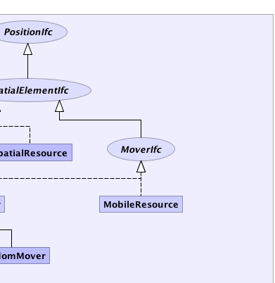
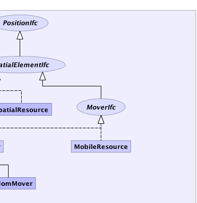

|  | |
 |
|
|
||||||||||
| PREV PACKAGE NEXT PACKAGE | FRAMES NO FRAMES | |||||||||
| Interface Summary | |
|---|---|
| CollisionDetectorIfc | |
| CollisionHandlerIfc | |
| CoordinateIfc | |
| MovementControllerIfc | This interface works with AbstractMover and can be used to control the movement of the element through a spatial model. |
| MoverIfc | |
| OutsideSpatialModelHandlerIfc | |
| PathFinder | Interface for a path finding algorithm |
| PositionIfc | |
| SpatialElementIfc | |
| Class Summary | |
|---|---|
| AbstractMovementController | An AbstractMovementController can be used to control the movements of and AbstractMover |
| AbstractMover | An AbstractMover implements the MoverIfc and is a model element (SpatialModelElement). |
| Collision | |
| EuclideanStepBasedMovementController | |
| GreatCircleBasedSpatialModel | This class represents the distance between two coordinates using the Great Circle Distance. |
| MobileResource | |
| Mover | |
| Path | |
| RandomMover | |
| RectangularGridSpatialModel2D | |
| ResourceLocation | A ResourceLocation holds a set of resources that are assigned to this location in a spatial model. |
| SpatialElement | A SpatialElement represents an object that is within a spatial model. |
| SpatialModel | |
| SpatialModelElement | SpatialModelElement represents a ModelElement within a SpatialModel. |
| SpatialResource | A SpatialResource is a resource that can be placed/positioned within a SpatialModel It is not "self-moving" but can be positioned by clients at various locations (coordinates, etc) within the spatial model. |
| Vector3D | The Vector3D class implements a 3D vector with the double values x1, x2, x3. |
| Enum Summary | |
|---|---|
| GreatCircleBasedSpatialModel.Direction | Defines the directions on a compass |
| Exception Summary | |
|---|---|
| NoPathFoundException | |
|  | |
|
|
|
||||||||||
| PREV PACKAGE NEXT PACKAGE | FRAMES NO FRAMES | |||||||||